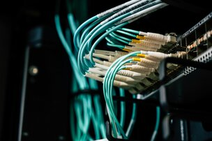

Modern Day and Internet of Things
Today you can go to the store and find vacuums, mops, and everyday household items that connect to your network or are controlled by a remote. Every one of these items can be hacked, and pose a potential threat to your network and home. Do you own a smart tv, xbox, a digital assistant like Alexa, baby monitors or more? Try to find everything in your home that connects to your WiFi. Don't forget your thermostat might be able to connect as well! So a problem with many of these IOTs or Internet of Things, is that they are not always updated and secured. So they are a potential weak spot in your network.
Network Segmentation
Take Action NOW!
- Identify What is connecting to your internet that is not your phone or computer.
- Look are your router and google if and how to set of other networks on it.
- Create a seperate networ with a different password and put all IOT on it.
- Look into making another network specifically with guests.
This is where network Segmentation comes in! Keeping your main network seperated from your Internet of Things (IOT) network helps keep you secure. If your smart tv is easy to get into, it creates a foothold for hackers to get into your network which can escalate into account credintials, bank accounts, even private information about you and your family. Go to your router, google it and see if you can create another network. Call it whatever you want, make sure the password for this network is different from your main network. Connect all IOT devices onto it and already you are that much more secure! Identify what is connecting to your internet that is not your phone or computer Look at your router and google how to set up another network on it. Create a seperate network, with a DIFFERENT password and put all IOT on it. (xbox, controllers etc.) Look into making another network for guests as well!
